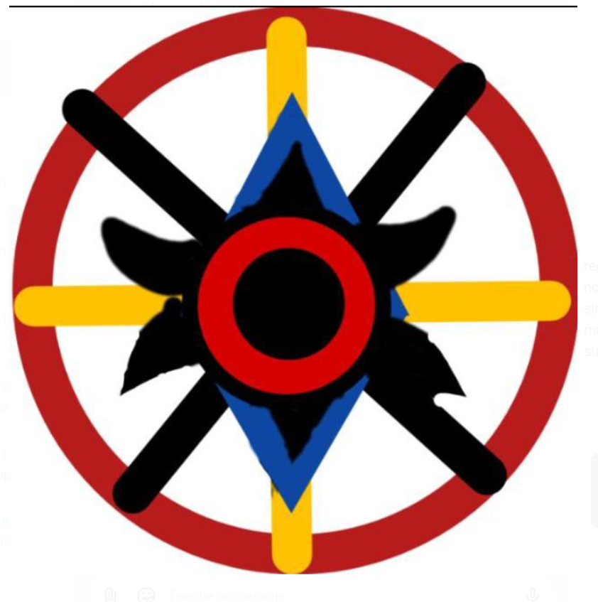

I
Ironseb7
Carlos Sebastián
LÍDER
FUNDADO EN MINECRAFT · UNIDOS COMO LEGIÓN
Una historia de amistad, mundos compartidos y nuevos comienzos.
CONOCE NUESTRA HISTORIA ↓Hace un par de años, dos amigos se juntaron en un mundo de Minecraft y crearon este grupo: Juan Gamert3 (Juan) y Ironseb7.
El líder, llamado Carlos Sebastián (Ironseb7), bautizó al grupo como The Legion. Desde entonces, el grupo ha reunido amigos de distintos lugares y ha seguido adelante a través de muchas aventuras.
Cada miembro forma parte de la historia del grupo.
Carlos Sebastián
LÍDERJuan Sebastián
PRELÍDERThomas
MIEMBROMarcos
MIEMBRODiego
MIEMBROMateo
MIEMBROEstefano Andre
MIEMBROEmmanuel
MIEMBROAndres Fernando
MIEMBROLa comunidad reúne amigos de varios rincones de Latinoamérica.
Líder
Prelíder
thomigum, Marcos14abril, Diegostart, Soloparamateo, Papitas, Emmanuel y Andres el niño bueno
Este grupo ha sido reconstruido muchas veces, pero su historia sigue creciendo.
— Juan